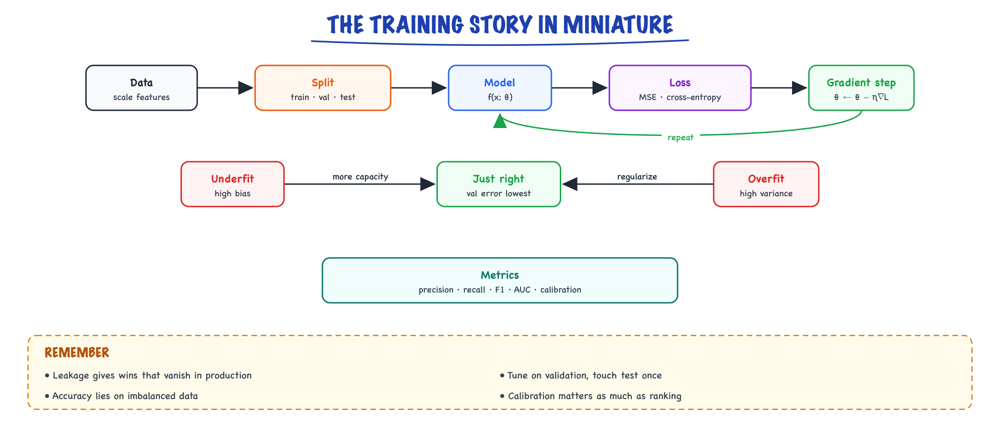

Classical machine learning // Math & ML foundations
Regression, gradient descent, generalization, regularization and metrics: the discipline LLMs still obey.
01 — At a glance

Model, loss, gradient, update, repeat; then the real question is whether it generalizes. Every later model obeys the same discipline.
02 — New words
| Word | Meaning |
|---|---|
| Feature | One input number describing an example, such as a ticket's sentiment score or the customer's plan. |
| Label | The answer you want the model to predict for an example: hours to resolve, or whether it escalated. |
| Loss | A number that says how wrong the model's predictions are on some data. Training makes it small. |
| Linear regression | Predict a number as a weighted sum of features plus a constant, fitted by minimising squared error. |
| Logistic regression | Predict a probability by passing a weighted sum through the sigmoid function, fitted by minimising log-loss. |
| Gradient descent | Repeatedly nudge the weights a small step in the direction that lowers the loss fastest. |
| Train / validation / test split | Data for fitting, data for choosing settings, and data touched once at the end to estimate real-world performance. |
| Overfitting | Fitting the noise in the training data so well that predictions on new data get worse. |
| Bias / variance | Error from a model too simple to capture the pattern, versus error from a model so flexible it changes with every training sample. |
| Regularisation | A penalty on large weights (L2) or on non-zero weights (L1) that trades a little training fit for better generalisation. |
| Precision / recall | Of the items flagged, the fraction that were truly positive; of the truly positive items, the fraction that were flagged. |
| ROC-AUC / PR-AUC | Threshold-free ranking quality: the chance a random positive outranks a random negative, and the area under the precision–recall curve. |
| Data leakage | A feature or split that lets information unavailable at prediction time into training, so offline scores are too good to be true. |
| Calibration | Do 0.7-confidence predictions come true ~70% of the time? |
The lesson
03 — The question
Classical machine learning is the study of fitting a function to examples so that it predicts well on examples it has never seen. LLMs did not replace that discipline; they inherited it. Train and test splits, overfitting, leakage, precision and recall, and choosing a threshold from costs are exactly the tools you use to evaluate an LLM feature, an LLM-as-judge or a retrieval system. And a logistic regression on top of embeddings is still the cheapest good classifier you can ship.
The questions interviewers ask:
- Explain the bias–variance trade-off, and how you would tell which one is hurting you.
- Your classifier is 87% accurate. Why might that be worthless, and which metrics would you look at instead?
- What is data leakage? Give an example you would actually catch.
- How do you choose a decision threshold, and why is 0.5 usually wrong?
The running example is a support-ticket triage system for a software company. It needs two models. A regression model predicts hours to resolve a ticket, from the number of systems the ticket involves. A classification model flags tickets likely to escalate to an engineer, from four features: message sentiment (−1 very negative to +1 positive), the customer's prior tickets in 30 days, whether the customer is on the enterprise plan, and message length in words. The classifier's data is 5,000 historical tickets, of which 10.9% escalated, split 3,000 / 1,000 / 1,000 into training, validation and test. All numbers below come from actually fitting these models on synthetic data; the code at the end reproduces the classifier's numbers.
04 — Step 1: what learning means
Every supervised learning method has the same three parts:
- A model family: the set of functions you are willing to consider, for example "a straight line", "a weighted sum through a sigmoid", or "a tree of if-then splits".
- A loss: a number measuring how wrong one member of that family is on the training data.
- An optimiser: a procedure for finding the member with the lowest loss.
The goal, however, is not low training loss. A lookup table that memorises every training ticket has zero training loss and is useless on tomorrow's tickets. The goal is low loss on new data drawn from the same source, called generalisation. Since we cannot measure the future, we hold some data back, never fit on it, and treat performance there as our estimate. Everything in this lesson is either about fitting (Steps 2 to 4) or about making that estimate honest (Steps 5 to 9).
05 — Step 2: linear regression, solved exactly
Five resolved tickets, \(x\) = systems involved, \(y\) = hours to resolve:
| \(x\) | 1 | 2 | 3 | 4 | 5 |
|---|---|---|---|---|---|
| \(y\) | 3 | 5 | 6 | 9 | 10 |
The model family is a line, \(\hat y = b + w x\). The loss is the mean squared error, \(\text{MSE} = \frac{1}{n}\sum (y - \hat y)^2\). Squaring makes every error positive and punishes large errors more than small ones; it is also the right loss if the noise is roughly normally distributed.
For a line, the best weights have a closed form. The slope is how much \(x\) and \(y\) move together divided by how much \(x\) moves on its own:
\[ w = \frac{\sum (x_i - \bar x)(y_i - \bar y)}{\sum (x_i - \bar x)^2} = \frac{18}{10} = 1.8, \qquad b = \bar y - w \bar x = 6.6 - 1.8 \times 3 = 1.2 \](\(\bar x = 3\) and \(\bar y = 6.6\) are the means.) Predictions are 3.0, 4.8, 6.6, 8.4, 10.2; errors 0, 0.2, −0.6, 0.6, −0.2; MSE 0.16. Each extra system adds 1.8 hours.
Always compare with the dumbest possible model. Predicting the mean (6.6 hours) for every ticket gives MSE 6.64. The fraction of that baseline error the line removes is \(R^2 = 1 - 0.16/6.64 = 0.976\). A model that does not clearly beat its baseline has learned nothing, however good its loss looks in isolation.
06 — Step 3: gradient descent, and why feature scale matters
Closed forms exist only for a few models. The general method, and the one every neural network uses, is gradient descent: start anywhere, compute how the loss changes with each weight, step against that direction, repeat. For MSE on a line, the gradients are
\[ \frac{\partial\,\text{MSE}}{\partial b} = \frac{2}{n}\sum(\hat y_i - y_i), \qquad \frac{\partial\,\text{MSE}}{\partial w} = \frac{2}{n}\sum(\hat y_i - y_i)\,x_i \]Starting at \(b = w = 0\), every prediction is 0, so the gradients are −13.2 and −46.8: both weights should increase, \(w\) much more. With a learning rate \(\eta\), each step does \(w \leftarrow w - \eta \cdot \text{gradient}\).
| Setup | \(\eta\) | Result |
|---|---|---|
| \(x\) as given (1 to 5) | 0.01 | Reaches within 1% of the best MSE in 572 steps |
| \(x\) as given | 0.05 | 113 steps |
| \(x\) as given | 0.10 | Diverges: the weights reach \(10^{270}\) |
| Same feature in units 100 times larger (100 to 500) | just under the largest stable | After 200,000 steps, \(b\) is still 0.54 instead of 1.2 |
| \(x\) standardised (mean 0, std 1) | 0.45 | 2 steps |
Why such different behaviour from the same data? The loss surface is a bowl, and its shape depends on the scale of the features. When one direction is steep (the weight on a feature with large values) and another is shallow (the intercept), the learning rate must be small enough not to overshoot the steep direction, which makes progress along the shallow one glacial. The ratio of steepest to shallowest curvature, the condition number, is 70 for the raw feature, about 605,000 when \(x\) is recorded in units 100 times larger (100 to 500), and exactly 1 after standardising, where the bowl is perfectly round and one well-sized step lands near the bottom.
That is why you standardise features (subtract the mean, divide by the standard deviation) before any gradient-based or distance-based method, and why neural networks use normalisation layers. The scaler must be fitted on the training set only and then applied, unchanged, to validation and test data; fitting it on all data leaks test statistics into training (Step 9).
07 — Step 4: logistic regression for a yes/no answer
For escalation the answer is yes or no, and we want a probability. A weighted sum \(s = b + \sum_j w_j x_j\) can be any number, so logistic regression squashes it with the sigmoid:
\[ p = \sigma(s) = \frac{1}{1 + e^{-s}} \]The sigmoid maps 0 to 0.5, large positive numbers toward 1 and large negative numbers toward 0. Its inverse gives the interpretation: \(s = \log\frac{p}{1-p}\), the log-odds. So each weight is the change in log-odds per unit of its feature, and \(e^{w}\) is the factor by which the odds multiply.
The loss is log-loss (binary cross-entropy): \(-\log p\) for tickets that escalated and \(-\log(1-p)\) for those that did not, averaged. It is the two-class case of the cross-entropy in The math you need, and for the same reason it beats squared error: it pushes hardest on confident mistakes. There is no closed form, so it is fitted by gradient descent or a related method.
Fitted on the 3,000 training tickets:
| Feature | Weight | Odds multiplier \(e^{w}\) | Reading |
|---|---|---|---|
| Sentiment (per unit) | −1.795 | 0.166 | Going from neutral (0) to fully positive (+1) cuts the odds of escalation about six-fold |
| Prior tickets (each) | +0.399 | 1.49 | Each recent ticket raises the odds by about half |
| Enterprise plan | +0.897 | 2.45 | Enterprise customers have about 2.5 times the odds |
| Length (per word) | +0.001 | 1.001 | No useful effect |
| Intercept | −3.651 | Baseline log-odds for a neutral, short, non-enterprise first ticket |
Two cautions. Raw weights depend on units (per word versus per hundred words), so compare features' importance using weights fitted on standardised features. And a weight describes association in this data, not cause: enterprise customers may escalate more because they have more complex setups, not because of the plan itself.
08 — Step 5: generalisation and the held-out split
To see overfitting directly, return to regression. Draw 12 training tickets from the true relationship \(y = 1.2 + 1.8x\) plus random noise (standard deviation 0.8 hours), and 2,000 test tickets from the same source. Fit polynomials of increasing degree:
| Model | Training MSE | Test MSE |
|---|---|---|
| Degree 1 (a line) | 0.434 | 0.945 |
| Degree 3 | 0.329 | 1.005 |
| Degree 9 | 0.039 | 1,484.7 |
Training error falls every time we add flexibility; test error rises. The degree-9 curve has ten coefficients for twelve points, so it can bend through almost every one, noise included, and between and beyond them it swings wildly. Its largest coefficient is about 34 million. That is overfitting: the model learned the particular sample, not the relationship.
This is why data is split three ways. The training set fits weights. The validation set chooses everything else: model degree, regularisation strength, threshold, features. The test set is used once at the end. If you pick the degree that scores best on the test set, you have fitted the test set too, and its score is no longer an honest estimate. With little data, k-fold cross-validation rotates which fifth (say) is held out and averages, so every example serves as validation once.
09 — Step 6: bias and variance
Prediction error on new data has three sources. Noise is irreducible: here, 0.64 (the noise standard deviation squared). Bias is error from the model family being wrong, for example a line fitted to a curve; it stays no matter how much data you add. Variance is error from the fitted model depending on which training sample you happened to get.
Measure variance directly: draw 200 different 12-ticket training sets, fit each model, and predict at \(x = 4.5\) (true value 9.3).
- Degree 1: the 200 predictions average 9.22, a bias of −0.08, and the typical miss is 0.28 hours.
- Degree 9: the typical miss is 3.4 hours, and a few fits predict values in the millions. Low bias in principle, enormous variance in practice.
The diagnosis interviewers want follows from the learning curves:
- High bias: training and validation error are both high and close together. More data will not help. Use a more flexible model or better features.
- High variance: training error is low, validation error much higher. More data, regularisation, a simpler model, or averaging many models (as random forests do) will help.
The trade-off is not a law that every model must sit on. Very large neural networks trained on huge datasets with good regularisation achieve both low bias and low variance; the trade-off describes what happens when you add flexibility while holding data fixed.
10 — Step 7: regularisation
Regularisation adds a penalty for large weights to the loss. L2 (ridge regression, or "weight decay" in neural networks) adds \(\alpha \sum_j w_j^2\):
\[ \text{loss} = \text{MSE} + \alpha \sum_j w_j^2 \]The model may still use all ten polynomial terms but pays for every large coefficient, so it chooses smooth curves unless the data strongly demands otherwise. The same degree-9 model with features standardised and ridge penalties of increasing strength:
| \(\alpha\) | Training MSE | Test MSE | Largest weight |
|---|---|---|---|
| 0 (none) | 0.039 | 1,484.7 | ≈ 34 million |
| 0.01 | 0.330 | 0.960 | 3.3 |
| 0.1 | 0.352 | 0.959 | 2.5 |
| 10 | 0.942 | 1.280 | 0.48 |
| 100 | 2.051 | 2.228 | 0.14 |
A small penalty removes almost all of the overfitting: test error falls from 1,485 to 0.96, the level of the correct straight-line model. Too large a penalty flattens the model until it underfits (high bias). \(\alpha\) is chosen on the validation set.
L1 (lasso) penalises \(\alpha\sum_j |w_j|\) instead. Its effect differs in a useful way: L1 drives unhelpful weights to exactly zero, so it selects features. On the escalation model with moderate strength, L1 sets the length weight to exactly 0.000 and keeps the other three, while L2 merely shrinks it to 0.036. Use L1 when you suspect many features are useless and want a smaller model; L2 when features are correlated and you want their weight shared rather than one picked arbitrarily.
11 — Step 8: metrics that match the decision
Back to escalation. The test set has 1,000 tickets, 126 of which escalated. The model outputs a probability; to act, we flag tickets above a threshold. At the default 0.5:
| Predicted escalate | Predicted fine | |
|---|---|---|
| Actually escalated (126) | 5 (true positives) | 121 (false negatives) |
| Actually fine (874) | 1 (false positive) | 873 (true negatives) |
Accuracy is \((5 + 873)/1000 = 87.8\%\). A model that always says "fine" scores 87.4%. The classifier barely beats doing nothing, because with 87% negatives, accuracy is dominated by the easy majority. Look instead at:
- Precision = TP / (TP + FP) = 5/6 = 0.83: flagged tickets are usually real.
- Recall = TP / (TP + FN) = 5/126 = 0.04: it catches 4% of escalations. Useless for the purpose.
- F1, the harmonic mean of the two, is 0.08, which exposes the problem in one number.
The model itself is not useless; the threshold is. Threshold-free metrics judge the ranking: ROC-AUC is 0.79 (a random escalated ticket gets a higher score than a random fine one 79% of the time; 0.5 is chance). PR-AUC (average precision) is 0.38, against a chance level equal to the positive rate, 0.126. For rare positives PR-AUC is the more honest of the two, because ROC-AUC is flattered by the many easy negatives.
Choosing the threshold from costs. Suppose an engineer reviewing a flagged ticket costs $50, and a missed escalation (an angry enterprise customer, an SLA credit) costs $400. Flagging a ticket with escalation probability \(p\) is worth it when the expected saving exceeds the review cost: \(400p > 50\), so \(p > 0.125\). That holds only if the probabilities are calibrated, meaning tickets scored around 0.14 escalate about 14% of the time. Checking by bins on the test set: tickets scored 0.10 to 0.20 averaged 0.144 predicted and escalated 14.6% of the time. Calibrated enough near the threshold, which is the region that matters (the 0.2 to 0.4 bin is less good: 0.275 predicted, 36.8% actual).
| Threshold | Flagged | Precision | Recall | Total cost |
|---|---|---|---|---|
| Never flag | 0 | – | 0 | $50,400 |
| 0.5 | 6 | 0.83 | 0.04 | $48,700 |
| 0.3 | 66 | 0.44 | 0.23 | $42,100 |
| 0.125 | 318 | 0.28 | 0.70 | $31,100 |
| 0.05 | 620 | 0.18 | 0.90 | $35,800 |
The derived value is a starting point, not a final answer: sweeping thresholds on the validation set shows the cost curve is flat between about 0.12 and 0.2 (validation cost $27,250 at 0.125, $26,550 at 0.2), and on this test set 0.15 happens to cost $29,900. Differences that small are sampling noise, so take the cost-derived threshold, confirm it on validation, and do not chase the test-set minimum. At 0.125 the model saves 38% of the cost of doing nothing, with a precision of only 0.28. That is the right answer for this business, and it would look terrible on an "accuracy" dashboard (73% here). Metrics follow costs. The same reasoning sets the threshold for an LLM-as-judge, a hallucination detector or a moderation filter (Eval metrics).
12 — Step 9: leakage and honest splits
A colleague adds a fifth feature, "reassigned to tier 2", and the test ROC-AUC jumps from 0.79 to 0.98. Celebrate? The feature is set by an agent during the escalation process. In the historical data it is nearly a copy of the label. At the moment the model is meant to run, when the ticket arrives, it is always 0. Scored with that feature set to 0, as it would be in production, the model's recall at a 0.5 threshold is exactly 0: it learned to rely on a signal it will never see.
That is data leakage: information unavailable at prediction time reaching training. The tell is a score that is too good. Common forms:
- Target leakage: features recorded after, or because of, the outcome (resolution codes, reassignment flags, "refund issued").
- Temporal leakage: a random split puts next month's tickets in training and last month's in test, so the model learns the future. For anything deployed over time, split by time: train on January to September, validate on October, test on November.
- Group leakage: the same customer's tickets in both training and test let the model memorise customers. Split by customer when the model must generalise to new customers.
- Preprocessing leakage: fitting a scaler, an imputer, a vocabulary or a feature selection on all the data before splitting.
- Duplicate leakage: near-identical examples on both sides of the split. For LLMs this is benchmark contamination: test questions that appeared in the pretraining data.
The defence is a question you ask of every feature: at the exact moment this prediction is made, would I know this value?
13 — A recipe for a new prediction problem
- Define the decision and its costs before touching data: what action does a prediction trigger, and what do each kind of error cost? This picks the metric and later the threshold.
- Split by how the model will be used: by time for anything deployed over time, by group (customer, document, patient) when new groups appear. Lock the test set away.
- Baseline: majority class, mean, or a one-rule heuristic. Every later number is quoted against it.
- Simple model first: linear or logistic regression on standardised features. It is fast, interpretable, and often within a few points of anything fancier.
- Then gradient-boosted trees (XGBoost, LightGBM) for tabular data: they handle non-linear effects, interactions and unscaled features, and usually win on tables. Neural networks rarely beat them on small tabular data.
- Tune on validation: regularisation, depth, threshold. Look at learning curves to tell bias from variance.
- Error analysis: read 50 misclassified examples and group them. The groups tell you which feature or label fix is worth most.
- Test once, then monitor in production for drift, because the data the model sees will change (MLOps & drift).
For LLM applications the same recipe holds with different parts: the "model" may be a prompt, the "features" are retrieved context, and the test set is your eval set, which must be kept out of every prompt and few-shot example you write.
14 — In code: the escalation model end to end
import numpy as np from sklearn.linear_model import LogisticRegression from sklearn.pipeline import make_pipeline from sklearn.preprocessing import StandardScaler from sklearn.metrics import roc_auc_score, average_precision_score rng = np.random.default_rng(42) n = 5000 sentiment = rng.uniform(-1, 1, n) prior = rng.poisson(1.5, n) enterprise = rng.random(n) < 0.3 length = rng.normal(120, 40, n).clip(10) true_logit = -3.6 - 1.8 * sentiment + 0.45 * prior + 1.0 * enterprise # length has no effect y = (rng.random(n) < 1 / (1 + np.exp(-true_logit))).astype(int) X = np.c_[sentiment, prior, enterprise, length] train, test = slice(0, 3000), slice(4000, 5000) # 3000-4000 is validation model = make_pipeline(StandardScaler(), LogisticRegression()) # scaler fitted on train only model.fit(X[train], y[train]) p = model.predict_proba(X[test])[:, 1] yt = y[test] print(f"escalation rate {y.mean():.3f}; always-'fine' accuracy {1 - yt.mean():.3f}") print(f"ROC-AUC {roc_auc_score(yt, p):.2f} PR-AUC {average_precision_score(yt, p):.2f}") REVIEW, MISS = 50, 400 # dollars for t in [0.5, 0.3, REVIEW / MISS, 0.05]: flag = p >= t tp, fp, fn = (flag & (yt == 1)).sum(), (flag & (yt == 0)).sum(), (~flag & (yt == 1)).sum() cost = REVIEW * flag.sum() + MISS * fn print(f"t={t:.3f} flagged={flag.sum():4d} precision={tp / max(tp + fp, 1):.2f} " f"recall={tp / (tp + fn):.2f} cost=${cost:,}")
It prints an escalation rate of 0.109, an always-"fine" accuracy of 0.874, ROC-AUC 0.79 and PR-AUC 0.38, and the threshold table above: $48,700 at 0.5, $42,100 at 0.3, $31,100 at 0.125 and $35,800 at 0.05.
More detail
15 — Classical ML — the discipline LLMs still obey
Everything about generalization, leakage, metrics, and evaluation was worked out here first — and it all still applies to LLM systems. Skip this and you'll relearn it expensively later.
16 — The learning problem
given examples (x, y): find θ minimizing (1/n) Σ L(f_θ(xᵢ), yᵢ) + λ·R(θ)
fit the data ────────────┘ └──── but stay simple (regularization)
The goal is never low training loss — it's good behavior on future, unseen data. Every technique in ML is about closing that gap. Memorizing the training set gets you a perfect score on data you'll never see again and nothing on the data that actually arrives tomorrow; the λ·R(θ) term (and dropout, early stopping, more data, simpler models) all exist to buy generalization at the price of a little training-set fit.
17 — The algorithm zoo (what each one teaches you)
| Algorithm | Idea | The lesson it embeds |
|---|---|---|
| Linear / logistic regression | weighted sum (+ sigmoid → probability) | baselines, residuals, thresholds vs probabilities |
| Decision trees | learned if/else partitions | nonlinearity, instability, interpretability |
| Random forest / gradient boosting | many trees averaged / sequentially fixing errors | ensembling; still the champion on tabular data — don't default to a neural net there |
| k-NN | copy the nearest labeled neighbors | distance is a modeling choice (→ embeddings) |
| k-means / PCA | cluster / compress without labels | unsupervised structure; scale sensitivity |
The zoo's meta-lesson: start with the dumbest model that could work. Logistic regression trains in seconds, is nearly impossible to misconfigure, and gives you a residual analysis that tells you what a fancier model would need to learn. If gradient boosting then beats it by 0.4 points of AUC, you know the signal is mostly linear and the fancy model isn't earning its complexity budget. The same discipline transfers to LLM systems verbatim: a single well-written prompt is the logistic regression of pipeline design — build it first, measure it, and make every added stage (retrieval, reranking, multi-step agents) justify itself against that baseline.
18 — Mini-scenario: the churn model that knew too much
You're building churn prediction for a subscription product. First model: AUC 0.97. Champagne? No — suspicion. Nothing about human behavior is 0.97 predictable. Error analysis finds the culprit feature: days_since_last_support_ticket, computed from a table that includes the cancellation call itself. The feature encodes the answer. Rebuilt without it: AUC 0.71 — the honest number, and still useful. The lesson generalizes: a result that's too good is a bug report, not a victory. In LLM land the identical failure is your eval questions appearing in the few-shot examples or the fine-tuning set — the pipeline "knows" the answer the same illegitimate way.
19 — Splits & leakage — where most silent failures live
Train fits parameters, validation picks hyperparameters, test is touched once at the end. Random splits are wrong whenever time, users, or documents create dependence: if production predicts the future, validate on the future; if the same user repeats, split by user. Fit preprocessing on train only.
That last sentence is where most real leakage lives, and it's mechanical, not conceptual: if you compute a scaler's mean, an imputer's fill value, or a target encoding over all rows before splitting, statistics of the test set have bled into training. The fix is structural — put every fitted preprocessing step inside a Pipeline so that cross-validation refits it on each training fold automatically:
import numpy as np import pandas as pd from sklearn.compose import ColumnTransformer from sklearn.pipeline import Pipeline from sklearn.preprocessing import StandardScaler, OneHotEncoder from sklearn.impute import SimpleImputer from sklearn.linear_model import LogisticRegression from sklearn.model_selection import GroupShuffleSplit, cross_val_score, GroupKFold df = pd.read_parquet("tickets.parquet") # one row per support ticket y = df.pop("churned") groups = df["user_id"] # same user appears in many rows! num_cols = ["tenure_days", "monthly_spend", "tickets_90d"] cat_cols = ["plan", "country", "channel"] pre = ColumnTransformer([ ("num", Pipeline([("impute", SimpleImputer(strategy="median")), ("scale", StandardScaler())]), num_cols), ("cat", Pipeline([("impute", SimpleImputer(strategy="most_frequent")), ("onehot", OneHotEncoder(handle_unknown="ignore"))]), cat_cols), ]) clf = Pipeline([("pre", pre), ("model", LogisticRegression(max_iter=1000, class_weight="balanced"))]) # WRONG: train_test_split(df, y) — the same user lands on both sides, # and the model "generalizes" by recognizing users, not churn signal. # RIGHT: split by user so validation users are truly unseen. splitter = GroupShuffleSplit(n_splits=1, test_size=0.2, random_state=42) train_idx, test_idx = next(splitter.split(df, y, groups=groups)) clf.fit(df.iloc[train_idx], y.iloc[train_idx]) # Scaler mean, imputer medians, one-hot vocab: ALL fit on train rows only, # because they live inside the pipeline. This is the whole point. scores = cross_val_score(clf, df.iloc[train_idx], y.iloc[train_idx], groups=groups.iloc[train_idx], cv=GroupKFold(n_splits=5), scoring="average_precision") print(f"PR-AUC {scores.mean():.3f} ± {scores.std():.3f}") # a mean WITH spread
The leakage test
Ask of every feature: "could this contain information that would not exist at the exact moment of prediction?" If yes, it's leakage and your offline metric is a lie. Concrete offenders seen in the wild: aggregates computed over a window that includes the label event; "last status" fields backfilled by a nightly job that runs after the outcome; target encodings fit on the full dataset; joining a dimension table by its current state instead of its state at prediction time. (LLM equivalent: your eval questions leaking into few-shot examples or fine-tuning data — same disease, new host.)20 — Metrics follow costs
Accuracy is meaningful only when every mistake costs the same. Otherwise: precision (of flagged, how many right), recall (of actual positives, how many found), F1 (their balance), PR-AUC for rare positives, log loss / calibration for probability quality. And the model vs its operating threshold are separate decisions — pick the threshold from business costs, not from the ROC curve's pretty corner.
Here's the full arithmetic, once, so it's never abstract again. Fraud detection over 10,000 transactions/day, 1% fraud (100 fraud, 9,900 legit). Costs: a missed fraud costs $500 (chargeback), a false alarm costs $5 (manual review). Two candidate thresholds on the same model:
| Threshold 0.5 ("high precision") | Threshold 0.2 ("high recall") | |
|---|---|---|
| Recall | 60% → catches 60, misses 40 | 90% → catches 90, misses 10 |
| Precision | 80% → 75 flags, 15 false alarms | 30% → 300 flags, 210 false alarms |
| Miss cost | 40 × $500 = $20,000 | 10 × $500 = $5,000 |
| Review cost | 15 × $5 = $75 | 210 × $5 = $1,050 |
| Total daily cost | $20,075 | $6,050 |
The "worse" model configuration — precision collapsing from 80% to 30% — is 3.3× cheaper, because a miss costs 100× a review. F1 would have preferred the expensive one (0.68 vs 0.45; illustrative numbers throughout). Nobody can pick your threshold without the cost matrix, and the cost matrix comes from the business, not from sklearn. The generic recipe: expected cost at threshold t = FN(t)·cost_miss + FP(t)·cost_alarm; sweep t, plot it, pick the minimum, and revisit when costs change.
Calibration is the other half of "probability quality." A model is calibrated if, among all the times it says 0.7, the event happens ~70% of the time. Check it with a calibration (reliability) curve: bin predictions by predicted probability (0–0.1, 0.1–0.2, …), and for each bin plot mean predicted probability against the observed positive rate. A calibrated model hugs the diagonal; a curve sagging below the diagonal means the model is overconfident (says 0.9, delivers 0.7), bowing above means underconfident. Why you care: the cost arithmetic above multiplies probabilities by dollar amounts — if the probabilities are miscalibrated, your cheapest threshold is computed on fiction. Tree ensembles and neural nets are routinely miscalibrated out of the box; sklearn.calibration.CalibratedClassifierCV (isotonic or Platt scaling, fit on a held-out fold) repairs it. LLM-relevant echo: a model saying "I'm 90% confident" in text is not a calibrated 0.9 — treat verbalized confidence as a feature to calibrate, not a probability to spend.
21 — Bias / variance / error analysis
train bad + val bad → HIGH BIAS → more capacity/features, better optimization train good + val bad → HIGH VARIANCE → more data, regularize, simplify, check leakage both good, prod bad → DISTRIBUTION SHIFT → your offline data ≠ reality
This three-line table is a complete debugging decision tree, and its power is that it tells you what not to do: adding data to a high-bias model wastes a quarter; adding capacity to a high-variance model makes it worse. Diagnose first — it's one extra metric (train score next to val score), and it converts "the model is bad" into a named disease with a known treatment.
Error analysis = read the failures, sliced by segment (market, language, device, time). Aggregate scores hide concentrated harm — a 95% accurate model that's 60% on one country is a production incident wearing a good metric. The mechanical version: take 100 errors, hand-label each with a failure category (bad input, ambiguous label, missing feature, model wrong), count. Twenty minutes of reading errors routinely outperforms a week of hyperparameter search, because it tells you which problem to solve. Slicing is one groupby:
import pandas as pd from sklearn.metrics import precision_score, recall_score eval_df = pd.DataFrame({ "y_true": y_test, "y_pred": preds, "proba": probas, "country": meta["country"], "month": meta["ts"].dt.to_period("M"), }) def slice_report(df, by, min_n=200): rows = [] for key, g in df.groupby(by): if len(g) < min_n: # tiny slices are noise, not signal continue rows.append({by: key, "n": len(g), "precision": precision_score(g.y_true, g.y_pred, zero_division=0), "recall": recall_score(g.y_true, g.y_pred, zero_division=0)}) return pd.DataFrame(rows).sort_values("recall") print(slice_report(eval_df, "country").head(10)) # worst slices first print(slice_report(eval_df, "month")) # drift shows up as a trend
Gotchas that survive the transition to LLMs
- Validating on a random split of time-series data. Your model learns tomorrow's average from yesterday's rows of the same week. Offline AUC 0.9, production 0.6. Use time-based splits when production predicts forward.
- Tuning the threshold on the test set. The test set is now spent — it stopped estimating future performance the moment it influenced a decision. Tune on validation; touch test once.
- Comparing models on different eval subsets (one filtered nulls, one didn't). Diffs must be same-data, ideally paired per-example.
- class_weight / resampling changes calibration. Balance classes to train, then recalibrate probabilities before spending them on cost arithmetic.
- Ship gate = one aggregate number. Gate on the worst slice too, or the aggregate will happily launder a broken segment.
Why this stage matters for LLM work
Swap "features" for "prompts", "model" for "pipeline", and every rule here transfers: baselines before sophistication, held-out evals, leakage paranoia, slice analysis, metrics tied to costs. The fraud-threshold arithmetic above is the "when should my agent escalate to a human" decision (Tools & agents), with the same cost matrix reasoning. LLM engineering did not repeal classical ML discipline — teams that think it did rediscover it in production.Exercises
- Take any public tabular dataset (e.g. telco churn). Build the leakage-safe pipeline above, then deliberately break it: fit the
StandardScaleron the full dataset before splitting. Measure the metric gap between the honest and the leaky version — see how leakage can hide in a fraction of a point. - Sweep thresholds from 0.05 to 0.95 on your model, compute expected daily cost with the $500/$5 cost matrix, and plot cost vs threshold. Then re-run with a $50 miss cost — verify the optimal threshold moves toward high precision.
- Plot a calibration curve (
sklearn.calibration.calibration_curve, 10 bins) for a random forest, then wrap it inCalibratedClassifierCVand plot again. Quantify the improvement with Brier score. - Create a synthetic user-level dataset where each user has 10 correlated rows. Show that a random split reports materially higher AUC than a
GroupShuffleSplitby user — and explain in two sentences which number production will deliver. - Do a 100-error analysis on any model you own: hand-tag each error with one of 4–6 failure categories, and produce the count table. Identify the single change the table says to make next.
22 — What learning means
Linear and logistic regression contain the entire training story in miniature: a model, a loss, a gradient, an update, and the fight against overfitting. Neural nets just stack more of the same.
Instead of writing rules, pick a family of functions f(x; θ) and let data choose θ. Kinds of learning:
- Supervised: labeled pairs (x, y). Classification, regression.
- Unsupervised: only x. Clustering, density estimation.
- Self-supervised: labels made from the data itself, e.g. hide the next word and predict it. This is how LLMs pretrain on raw text at enormous scale.
- Reinforcement learning: learn from reward signals on actions. Used in RLHF and reasoning-model training.
The real goal is generalization: low error on data the model has never seen. Training error alone means nothing.
23 — Linear regression from scratch
model ŷ = w·x + b
loss L = (1/N) Σ (ŷᵢ − yᵢ)² # MSE
grads ∂L/∂w = (2/N) Σ (ŷᵢ − yᵢ) xᵢ
∂L/∂b = (2/N) Σ (ŷᵢ − yᵢ)
Read the gradient: error × input. Big errors on big inputs push the weight hardest. This exact "error times input" pattern recurs in every layer of every network.
import numpy as np X = np.random.randn(200, 3); true_w = np.array([2., -1., .5]) y = X @ true_w + 0.3 + 0.1*np.random.randn(200) w, b, lr = np.zeros(3), 0., 0.1 for step in range(200): err = X @ w + b - y # (200,) w -= lr * 2 * X.T @ err / len(y) # (3,) b -= lr * 2 * err.mean() print(w, b) # ≈ [2, -1, .5], 0.3
There's also a closed form, w = (XᵀX)⁻¹Xᵀy, but it costs O(d³) and doesn't exist for neural nets; gradient descent generalizes.
24 — Logistic regression and classification
For yes/no outputs, squash the linear score into a probability with the sigmoid and use binary cross-entropy:
p = σ(w·x + b), σ(z) = 1 / (1 + e^{−z})
L = −[ y log p + (1−y) log(1−p) ]
∂L/∂w = (p − y) x # same "error × input" shape
The decision boundary w·x + b = 0 is a straight line (hyperplane): logistic regression can only separate classes linearly. For K classes, swap sigmoid for softmax and BCE for cross-entropy: that's softmax regression, which is exactly the final layer of every classifier and every LLM.
25 — Gradient descent and the learning rate
θ ← θ − η · ∇L(θ)
- Batch GD: gradient over all data. Exact, too slow for big data.
- SGD: one example. Cheap, very noisy.
- Mini-batch (32–4096 examples): the standard. Noise is a feature: it helps escape sharp minima that generalize poorly.
The learning rate η is the single most important hyperparameter. Too small: slow crawl. Too large: overshoot, oscillate, diverge. Play with it:
Lab: gradient descent on L(w) = w²
Here the update is w ← w(1 − 2η). It converges for η < 0.5, zigzags but converges for 0.5 < η < 1, and explodes for η > 1. Real losses have different curvature in different directions, so one η is too big for steep directions and too small for flat ones: that's what momentum and Adam (Neural networks) fix.
26 — Generalization: bias, variance, overfitting
- Underfitting / high bias: model too simple. Train and val error both high.
- Overfitting / high variance: model memorizes noise. Train error low, val error high and rising.
- Splits: train (fit weights), validation (choose hyperparameters, early stop), test (touch once at the end). K-fold cross-validation when data is small.
- Leakage: test info sneaks into training (duplicates across splits, normalization stats computed on all data, future features). Produces great numbers that collapse in production.
Modern twist: very large networks can overfit in theory yet generalize well in practice (double descent, implicit regularization of SGD). Don't fear big models; watch validation curves.
27 — Regularization in classic ML
L2 (ridge): L + λ Σ w² # shrink all weights, smooth solutions L1 (lasso): L + λ Σ |w| # drives many weights to exactly 0 (sparsity)
λ trades fit vs simplicity; choose it on validation. In deep learning, L2 lives on as weight decay, joined by dropout, early stopping and data augmentation (Neural networks).
28 — Metrics that don't lie
| Metric | Definition | Use when |
|---|---|---|
| Accuracy | correct / total | balanced classes only |
| Precision | TP / (TP + FP) | false alarms are costly (spam filter) |
| Recall | TP / (TP + FN) | misses are costly (fraud, disease) |
| F1 | harmonic mean of P and R | imbalanced, need one number |
| ROC-AUC | P(score of random positive > random negative) | threshold-free ranking quality |
| Perplexity | exp(mean CE) | language models |
With 1% fraud, predicting "not fraud" always is 99% accurate and useless. In ad tech you already live this: CTR models are judged on AUC and log-loss, and calibration (predicted 2% ≈ observed 2%) matters as much as ranking.
29 — Features and data preparation
- Scale inputs (standardize to mean 0, std 1). Unscaled features make the loss surface a long narrow valley where GD zigzags.
- Categorical → one-hot or learned embeddings (the neural answer, Transformers & attention).
- Class imbalance → reweight the loss, resample, or pick metrics like F1/AUC.
- Deep learning largely replaced hand-made features with learned ones, but data quality, deduplication, and labeling still decide most outcomes.
In production
30 — Where people get lost
- "High accuracy means a good model." With 87% negatives, predicting "no" for everything scores 87%. Report precision, recall and PR-AUC against the base rate.
- "0.5 is the threshold." 0.5 is only right when both errors cost the same and classes are balanced. Derive the threshold from costs, then check calibration.
- Tuning on the test set. Every choice made by looking at test scores fits the test set. Choose on validation; open the test set once.
- Random splits for time-ordered data. The model sees the future during training and the offline score overstates production performance. Split by time.
- Fitting the scaler or imputer on all data. Test statistics leak into training. Fit preprocessing inside the training fold (a pipeline does this for you).
- Reading weights as causes. A weight is an association in this data, measured in this feature's units. Standardise to compare; run an experiment to claim cause.
- "More data always helps." It cures variance, not bias. If training and validation error are both high and close, add features or flexibility instead.
- Celebrating a suspiciously large jump. A jump from 0.79 to 0.98 AUC from one feature is more often leakage than insight. Ask when the feature's value becomes known.
31 — How this connects
Builds on
- The math you need — Vectors, matrices, derivatives, the chain rule, probability, cross-entropy and softmax, each with worked numbers.
Where this shows up later
- Neural networks — Layers, activations, backprop, initialization, optimizers, schedules, normalization and residuals.
- Pitfalls & pro habits — The mistakes that cost the most, and the habits that prevent them.
- Portfolio projects — Five projects from micrograd to a shipped service, and a weekend build that makes interview answers real.